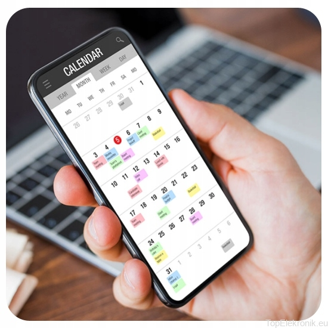

Com o calendário integrado ao aplicativo, os pais podem agendar e gerenciar as consultas médicas do filho, além de receber lembretes personalizados para cada visita agendada.
O histórico completo de medicações, posologia e cuidados necessários após alta ficam registrados de forma clara e acessível para garantir que os pais nunca esqueçam um passo importante no tratamento
Acompanhe a alimentação da criança durante a internação e após a alta. O aplicativo oferece sugestões de cardápios nutricionais e lembretes sobre restrições alimentares, se necessário.